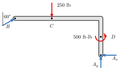

← All weeks · Week 8 module on Canvas
MECH 223-002 · Fall 2026 · Week 8 · Start here
2D rigid-body equilibrium
Arrive ready for lecture examples (or async work).
1. The full 2D toolkit
For a rigid body in planar equilibrium: ∑Fx = 0, ∑Fy = 0, and ∑MA = 0 about any convenient point A. Those three equations are your budget for unknown support reactions (in 2D).
2. Supports you must recognize
Pin (two force components), roller / rocker (one force, through the contact normal), fixed support (forces + moment), cable (tension), collar on a rod, etc. Wrong support model ⇒ wrong FBD ⇒ wrong exam.
3. Figure

4. Strategy tip
Pick a moment center that eliminates unknowns (through a pin, along a roller line). Then use force equations for what remains.
5. Check yourself
- How many unknown reaction components for a pin + roller beam in 2D (ignore friction)?
- Why is ∑M about the pin often the first equation you write?
6. Bring to class
Support reaction table from the text.
Attribution. Course text is original for MECH 223-002 (UNL). Figures from Engineering Statics: Open and Interactive (Baker & Haynes et al.), used under the book’s open licenses. Live book: engineeringstatics.org.